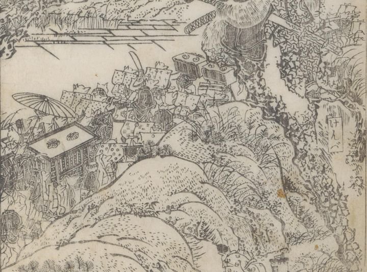

← 图鉴索引

狐の嫁入り行列。裃を着ている。挟箱。日傘。駕籠。脇で平伏している狐もいる。
著作者：蹄齋北馬／出典：親書誌：U426_nichibunken_0443：俊徳麻呂謡曲演義／日付：2017／資源識別子：U426_nichibunken_0443_0015_0001
Copyright (c)2010- International Research Center for Japanese Studies, Kyoto, Japan. All rights reserved.